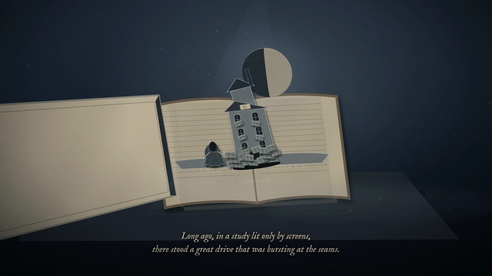

01Prologue
A drive can carry a whole world.
Projects, pictures, little things kept for later. Until there is no room left for what comes next.
A story of space, and what matters
See what fills your disk. Decide what deserves to stay. Make room with Reclaim.

01Prologue
Projects, pictures, little things kept for later. Until there is no room left for what comes next.
02The weight
A full disk is a question before it is a task. Reclaim helps you see what is taking up space.
03The lantern
On Windows, an administrator scan can read the MFT. A folder walk is there when that route is unavailable.
04The ledger
A clearer view of your files and folders gives every decision a place to begin.
05The heaviest things
See the biggest files anywhere on the drive, or browse the folder tree. Reveal a file in its folder to see where it belongs.
06The three paths
Verified duplicates keep a keeper. Rebuildable clutter leaves its sources intact. Old work is yours to review.
Smart Cleaning is available on Windows.
07The seal
Review the plan before it is sealed. Reclaim checks again before cleaning and keeps files that have changed.
Managed cleaning permanently removes the files you approve.
08The memory
The journal and What changed view help you retrace the work. Rules start off and only suggest future decisions for your review.
09The dawn
A lighter drive. The things worth keeping. And a little more space to begin again.
Watch the complete taleSettle in for a little while
90 seconds. Nine chapters.
An original score, and a little mint light.
English on-screen narration · music · no spoken dialogue
Download the filmYour space. Your decision.
The browser preview uses sample files. The desktop app works with your drive.